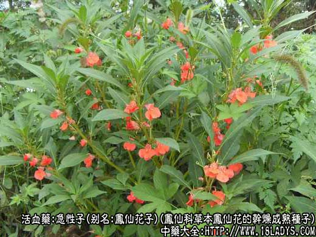
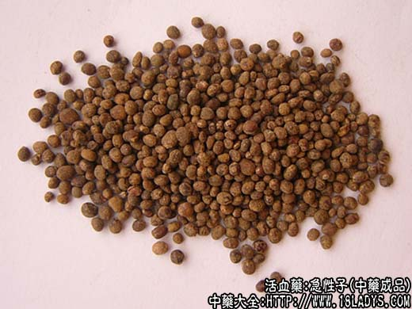
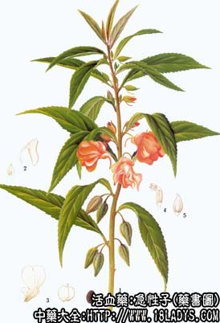

急性子为少常用中药。始载《救荒本草》。《本草纲目》列入草部毒草类凤仙项下。
别名：凤仙花子、染指甲花子。
来源：为凤仙科一年生草本植物凤仙花的干燥成熟种子。
产地：各地均有栽培，为观赏植物。
性状鉴别：种子呈扁圆形或卵圆形，直径1.5～3毫米。外表面棕褐色，在扩大镜下可见表面有多数棕色小突点及少数白色短绒毛。刮去表皮则显光泽。种脐在种子的狭端，稍突出。种皮薄而坚硬，剥去可见灰白色半透明状种仁，子叶二片，肥大坚硬，揉搓时略显油性。气微，味苦。
以紫褐色，颗粒饱满，纯净者为佳。
主要成分：含脂肪油、r—菠甾醇、爱甾米脂醇等。
功效与作用：软坚祛瘀、促进子宫收缩。
附：据报道，小白鼠口服凤仙子，避孕效果达100%，可能与其抑制排卵和使卵巢萎缩的作用有关。
炮制：生用。
性味：苦、温。有小毒。
归经：入肝、脾经。
功能：降气行瘀、软骨鲠。
主治：经闭、难产、骨鲠于咽喉，或用于胸痹证。
临床应用：过去多用于妇产科，近年来试用于治丝虫病和癌症。
1、民间用于催生，取其有促进子宫收缩的作用，可用凤仙子研末，内服0.9～1.5g，温开水冲服。
2、治丝虫病之淋巴管炎（流火），配龙衣（即蛇蜕）等，方如龙急散，服后能防止丝虫病淋巴管炎发作，但不能改善象皮肿体证，现有些地区已制成片剂（龙急片）推广应用，初步观察效果较好，副作用极少，偶有腹胀头昏。
3、试用于治癌，较多用于治消化道癌，有解毒散结作用。可用凤仙子30～90g，配石见穿30g、半支莲30～60g、红枣5～10枚为基本方，再随证加减。治肠癌时可配铁破紫虎汤又有人以本品配水蛭、蜈蚣、蟾蜍、壁虎、白花蛇舌草等制成片剂一般癌症。但效果有待进一步观察（动物实验未能证实急性子有抗癌作用）。
用量：0.9～3g。治癌入煎剂须用15～60g。
处方举例：1、龙急散：龙衣（蛇蜕）3g、急性子1.5g、蜈蚣1.2g、苍术1.2g，研成细末，温开水送服，每日1剂，15天为一疗程。
2、龙急片（成药）：含龙衣、急性子，或再加蜈蚣、苍术，每日顿服10片，连服30天。
附注：本品的地上茎叶，在华东当透骨草用，北京称为凤仙透骨草，性状描述见透骨草。
李时珍：凤仙根叶气味苦、甘、辛，有小毒，主治鸡鱼骨鲠。